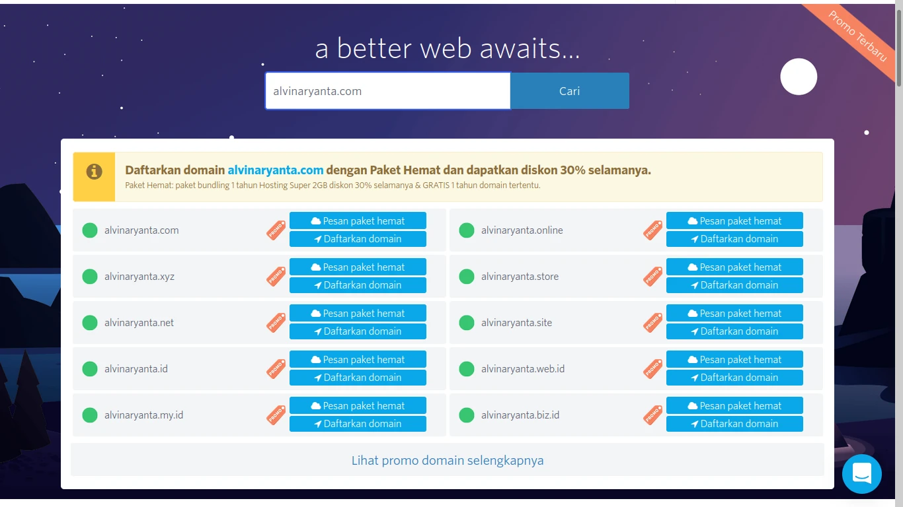
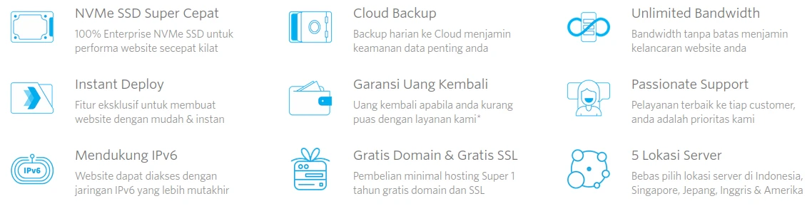
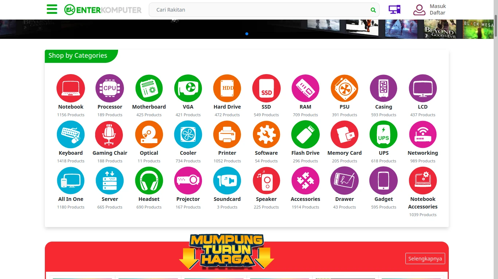
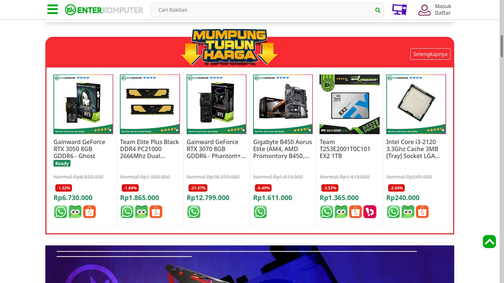

Dapat kita lihat bahwa ketika pertama membuka situs DomaiNesia, kita akan langsung disuguhi sebuah kolom kosong yang dapat diisi dengan nama domain yang kita mau.
Setelah itu, DomaiNesia akan memeriksa apakah nama domain tersebut tersedia atau tidak dan kemudian menawarkan beberapa pilihan yang dapat kita beli.
Sedikit scroll ke bawah, kita akan disuguhi keuntungan-keuntungan apa saja dari membeli domain di DomaiNesia.
Dari sini dapat kita amati bahwa seketika seseorang membuka situs DomaiNesia untuk membeli domain, ia akan langsung dapat melakukannya dengan mudah melalui landing page.
Ketika pertama masuk ke landing page Enter Komputer, kita tidak disuguhi suatu informasi yang to-the-point ke apa yang kita mau seperti di DomaiNesia, melainkan hanya disuguhi sebuah gambar besar berupa iklan produk/event tertentu yang kemungkinan akan menarik konsumen.
Namun, sedikit scroll ke bawah, kita sudah dapat memilih kategori produk yang kita inginkan. Setelah memilih, kita pun dapat dengan mudah memilih produk-produk yang kita inginkan untuk dibeli.
Sedikit scroll ke bawah lagi, kita akan disuguhi produk-produk yang sedang diskon dan produk-produk terbaru.
Jadi, berbeda dengan DomaiNesia, produk yang ditawarkan Enter Komputer cakupannya jauh lebih luas sehingga isi landing page-nya pun lebih luas. Namun, konsumen tetap dimudahkan untuk membeli apa yang ia inginkan.